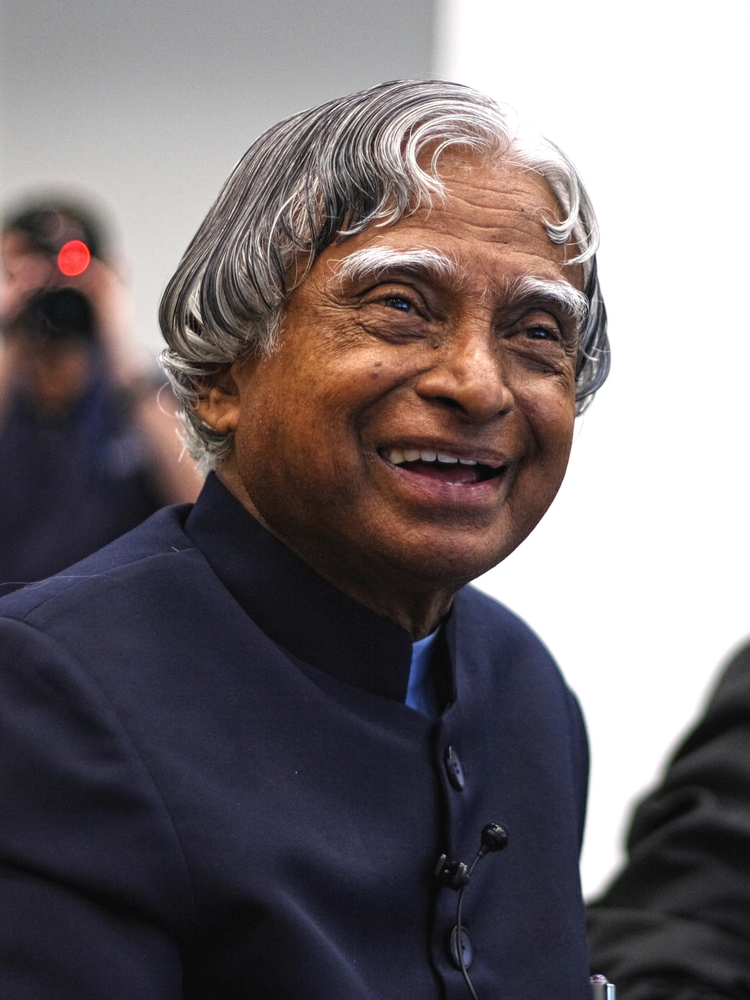

1931
Born in Rameswaram, Tamil Nadu.

Dr. A. P. J. Abdul Kalam was born on 15 October 1931 in Rameswaram, Tamil Nadu. He was an Indian aerospace scientist and engineer who played an important role in India's space and defence programmes. He studied aeronautical engineering at the Madras Institute of Technology and worked with DRDO and ISRO. He played a key role in the SLV-III project and India's missile development programme, earning him the title "Missile Man of India." He received the Bharat Ratna in 1997 and served as the 11th President of India from 2002 to 2007. He was also a respected author and strongly encouraged young people to pursue education and scientific innovation. Dr. Kalam passed away on 27 July 2015 while delivering a lecture at IIM Shillong.
Born in Rameswaram, Tamil Nadu.
Joined DRDO as a scientist.
Joined ISRO and contributed to India's space programme.
Played a key role in the successful SLV-III mission.
Received the Bharat Ratna.
Became the 11th President of India.
Passed away while delivering a lecture at IIM Shillong.